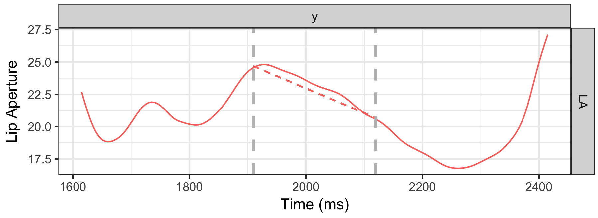
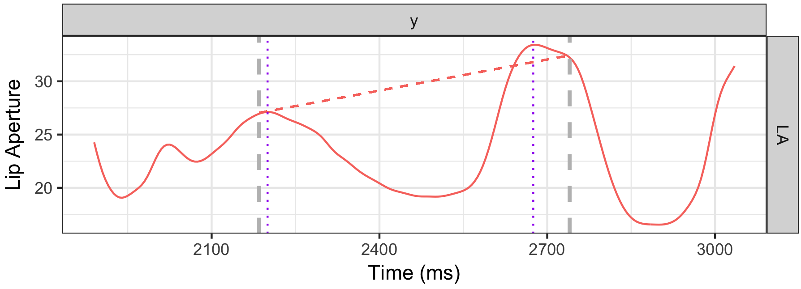
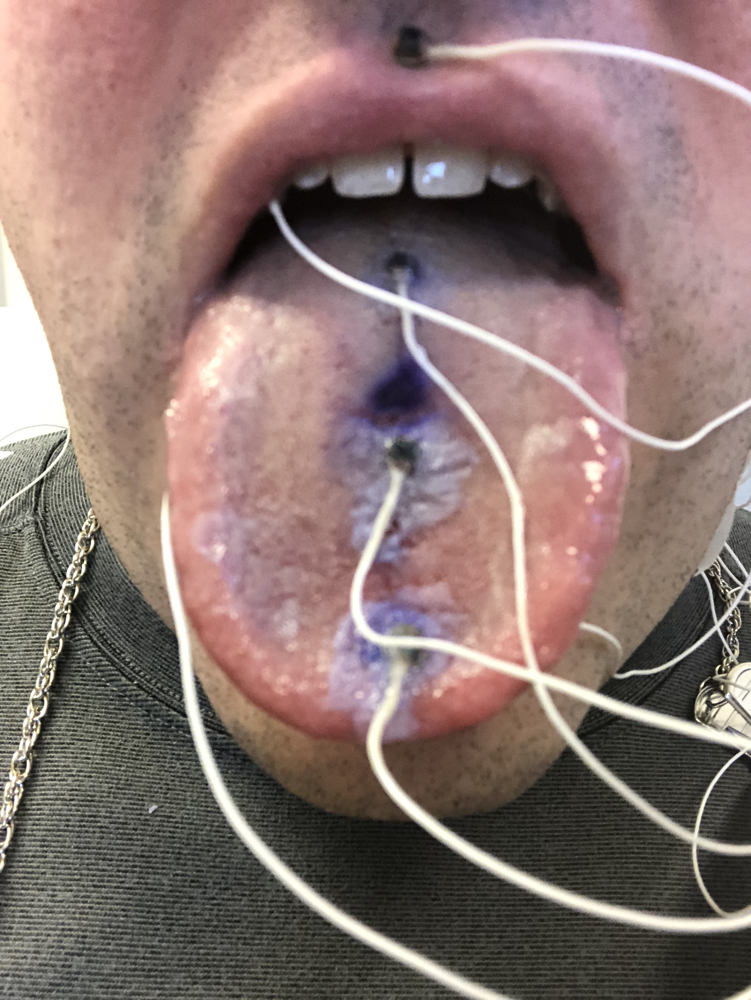
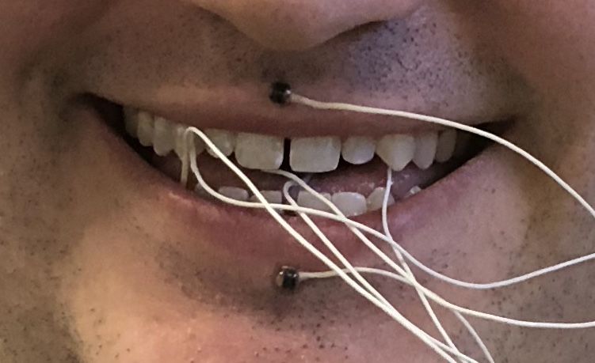

UC San Diego Department of Linguistics
wstyler@ucsd.edu
Any hypothesis about human language must be tested with human speakers
… but testing with human subjects is a painful process
IRBs are required
It’s time consuming
It’s expensive
Studies can be difficult to design
Each participant has a different language background
So, even though we need humans to test our hypotheses and theories…
Any information we can get without actually involving humans is great
Today, we’re going to talk about collecting this kind of information using…
Asking computer algorithms to take data and independently build a model of it
Heavily statistical
Many different algorithms
Classifiers read in features, then sort and classify data into multiple categories
Usable for known data (to learn more about the patterns)
Usable for predicting new data
“Can we understand exactly how and why this decision was made?”
Lots of modern ML is being done with Deep Neural Networks or other opaque, ‘black box’ methods
We’re going to focus on more transparent classifiers
Select a large corpus of data, and manually assign each observation to a group
Training: Feed this labeled data into an algorithm so it can learn the patterns
Testing: Give the trained algorithm new data without labels, and check the accuracy of its classifications
“Is this email spam, or not?”
“Should we lend this person money?”
“Is this handwritten symbol”1” or “2” or “3” or…?”
“Is this word a noun, or a verb, or an adjective, or…?”
So, these algorithms are well-studied and optimized
Their decisions are easier to quantify than humans’
They’ll (often) tell you how they made the decision they did
They have no knowledge that you don’t give to them
They make all decisions independently
They don’t require payment or scheduling
They’re available 24/7
How can machine learning be used to complement humans in linguistic research?
Two very different domains, problems and goals
Part 1: Speech Perception: What are the acoustic cues to vowel nasality?
Part 2: Speech Production: How can we identify specific articulatory gestures or postures in connected speech?
Both show strong evidence that algorithms can model human judgement and perception in tough problems
|
‘Cat’ [kæt] |
‘Can’t’ [kæ̃nt] |
|---|
What are the acoustic cues used for perceiving vowel nasality in English?
All spectral or temporal features in the signal
Some absolute, some relative
Features like…
Each feature requires many stimuli to be generated
Each stimulus might need several repetitions
The task is deeply boring
You’ll run out of participant endurance long before you run out of features
So, instead of asking humans to evaluate all 29, let’s use…
| ### The Basic Idea |
| Human speech perception is just classifying sounds based on acoustical features |
| * Computers can do that too! |
| * Give the acoustic feature information to a classifier and ask for oral vs. nasal judgements |
| * Greater accuracy means a feature or grouping is more useful and informative! |
1: Collect a corpus of oral and nasal words, and measure each feature
2: Give each feature to a Machine Learning Algorithm individually
3: Find the best group of features
4: Test those features with expensive and difficult humans
I recorded 12 English speakers making words with oral and nasal(ized) vowels
“Oral” vowels were in CVC contexts, and “Nasal” were in CVN/NVC/NVN contexts
This resulted in 3823 words
Then, I measured each of the 29 features at two timepoints per vowel
Then I handed them to a Support Vector Machine as training data
A very common, very accurate machine learning algorithm
Look at all the data in an multi-dimensional space
Try to find a line or hyperplane that optimally separates the classes
Classification is just seeing where the new data is relative to that line
Are any features good enough on their own to allow recognition of nasal vowels?
29 separate models (one per feature) classifying datapoints as “oral” or “nasal”
Each model outputs accuracy figures, which we can compare
F1’s Bandwidth is the most useful and informative feature
A1-P0, a measure of relative spectral prominence, gets second place
The worst feature performed at 51.23% accuracy
None of the features are good enough on their own!
Tested 10 a priori feature groupings
Compared the accuracy in light of the number of features
SVMs with all features worked best (29 features)
Formant Frequency and Bandwidth, Spectral Tilt, A1-P0, and Vowel Duration was the best subgroup (5 features)
We only lose 2.5% accuracy when we reduce our feature set by 69%!
Formant Bandwidth was the most useful single feature for English (62.5% accuracy)
… and we’ve got a multi-feature grouping with very good accuracy (82.2% accuracy)!
So, let’s test those five features with actual humans!
English listeners can use vowel nasality to identify missing nasal consonants
Let’s add or remove features from vowels to see what indicates “nasality”!
If adding or removing a feature changes perception, or makes them react more slowly, it’s important!
Use signal processing to simulate the oral-to-nasal change (or vice versa) in…
1: A1-P0 (or vice versa)
2: Duration
3: Spectral Tilt
4: Formant Bandwidth and Frequency
5: Modify all five features at once!
Recruited 42 normal-hearing Native English speakers from a department subject pool
Each listened to 400 words with different modifications
Analyzed both confusion and reaction time associated with stimulus changes
bad |
ban |
|---|
bomb |
bob |
|---|
Only formant modification had a significant effect on perception
Formant modification caused listeners to respond more slowly
Formant modification made oral vowels sound “nasal”
F1’s bandwidth is probably the cue
The machine learning models predicted F1’s bandwidth as the most useful feature…
… and the humans agreed!

Let’s give the computer the same experimental task as the humans, using the same altered stimuli, and see how they compare!
1: Train an SVM on all of the English Data
2: Extract acoustic features from the stimuli used in the experiment
3: Test those SVMs using the experimental stimuli data
4: Compare the by-condition confusion results to the humans

Humans and machines did show similar patterns
Humans are still more accurate overall
SVMs predicted gradient usefulness of the features
SVMs showed greater accuracy when all features were available
So, SVMs can show relative informativeness of features
The SVM studies very effectively narrowed the field
The SVM studies and the humans both agreed on the best feature
Trained SVMs were able to perform the same experiment, with similar results
Modeling human speech perception using machine learning is helpful!
Articulation during pauses has been studied previously
Pause postures per se first described by Katsika (2014) in Greek
Specific configurations of the articulators at strong prosodic boundaries


These postures seem to violate our usual tendency towards economy of effort
Do these pause postures occur in English?
Myself, Jelena Krivokapic, Ben Parrell, and Jiseung Kim are working to find this out.
But this is very new research
Can we reproducibly detect, measure, and label these pause postures?
Carstens AG501 System

Small wired sensors are glued to the articulators



| ### EMA: The Basics |
| - Machine pulses different magnetic fields from different coils oriented around the head |
| - Sensors get strength of each of these fields via electromagnetic induction |
| - The relative strengths of each field are used to calculate the sensor’s position in space |
| - Accurate to 0.1mm, at up to 1250 measurements per second |

Pause postures are newly discovered
They’re based on unusual patterns of curvature
Nobody has directly measured these before
Can we reliably identify and measure pause postures at all?
These articulatory data are incredibly rich
Pause postures are seen in changes over time
Speakers differ in articulation and absolute positions
Relatively fewer tokens seem to show pause postures at all
There are clear “Yes” and “No” tokens, but also “Maybe”


| ### Some clearly lack Pause Postures |
|---|
| ### Some tokens are less certain |
Are there measureable, reproducible patterns associated with pause postures in these data?
Can we empirically capture the gradience and uncertainty of these pause postures?
Can we identify pause postures without human intervention?
Human annotator marks pause boundaries
Human annotator classifies each as “Yes” or “No” Pause Posture based on Lip Aperture
Train SVM Classifiers to find PPs using the annotator’s Yes/No judgement
Test on new data to gauge accuracy
Is the pattern measureable?
Can we capture the gradience of these pause posture?
Can we identify pause postures without human intervention?
“Feed all the curves in, then observe the dominant patterns of variation”
Each component is orthogonal to the others, representing an indepenent type of difference
Each pause is given a score for each component
We’ll do two Principal Component Analyses


Each token has 12 scores, six from trajectory models, six from difference models
High or low scores represent the presence of a specific shape and timing of curvature in a given pause
Randomly split the data into 80% for training, 20% for testing
The SVM is trained using these curvature-based measures
Class weights are adjusted to compensate for the rarity of pause postures
Returns classification accuracy and Cohen’s Kappa to measure human-to-computer agreement
“Ignore the data, guess that every item is not a PP.”
| ACTUAL NO | ACTUAL YES | |
|---|---|---|
| PREDICTED NO | 268 | 107 |
| PREDICTED YES | 0 | 0 |
| Prediction Accuracy | 71.4% | |
| Cohen’s Kappa | 0 | |
Only using the 6 PCs per item that are based on actual trajectories
| ACTUAL NO | ACTUAL YES | |
|---|---|---|
| PREDICTED NO | 254 | 8 |
| PREDICTED YES | 14 | 99 |
| Prediction Accuracy | 94.1% | |
| Cohen’s Kappa | 0.85 | |
6 PCs per item based on actual trajectories, 6 PCs based on differences
| ACTUAL NO | ACTUAL YES | |
|---|---|---|
| PREDICTED NO | 258 | 7 |
| PREDICTED YES | 10 | 100 |
| Prediction Accuracy | 95.4% | |
| Cohen’s Kappa | 0.889 | |
The SVM finds the same patterns as the annotator, with good accuracy, using only curvature measurements
Pause postures are most readily identifiable using PC2 and PC3 from PCA #1 (Trajectory), and PC1 from PCA #2 (Difference)
Using those three features alone offers 92% accuracy, with a kappa of 0.832
The SVM finds the same patterns as the annotator, with good accuracy, using only curvature measurements
Pause postures are readily identifiable using PC2 and PC3 from PCA #1 (Trajectory), and PC1 from PCA #2 (Difference)
Using those three features alone offers 92% accuracy, with a kappa of 0.832
We had “Yes”“,”Maybe”, “Unlikely”, “No” judgements too
The SVM returns a “probability” judgement for each item
Let’s see how that aligns with our human’s judgements
SVM probability judgements reflect human judgements nicely
So, the gradience is now directly measurable
Our best-performing model finds PPs in novel data with 96.5% accuracy
Out of 375 unknown items, it made 17 mistakes
It’s slightly more prone to false positives
This could be viewed as a feature or a bug
This is not ideal, but respectable
So, depending on your needs…
We can now characterize their nature more clearly
Our major methodological concern is cleared up
Allowing us to actually do the work!
… and they appear to be related to upcoming sentence planning!
(c.f. our forthcoming paper in the Journal of Phonetics!)
Machine learning was able to very effectively model annotator judgements
These sorts of curve-based phenomena can be effectively captured with functional PCA
SVM probability judgements can address the gradiency of the task
Automatic annotation of pause postures is imperfect, but promising
Great for identifying subtle differences among classes or items
Great for working with curves and nuances, where conventional statistical models often struggle
Great for evaluating feature meaningfulness, particularly with large sets of possible features
Great for roughly simulating human decisions, perception, or annotation
Predicting human listeners’ perceptions (in Part 1)
Predicting human annotators’ judgements (in Part 2)
Using Machine Learning to explore the relationship between articulation, acoustics, and speaker variation in nasality
Determining the most informative cues for voicing type perception and measurement in the presence of other phenomena
Studying articulation and acoustics with regard to a feature’s functional and informational load

My collaborators in Part 2, Jelena Krivokapic, Ben Parrell, and Jiseung Kim
University of Michigan Phonetics Laboratory (and Phondi group)
NSF Grant BCS-1348150 to Patrice Speeter Beddor and Andries W. Coetzee
NSF Grant 1551513 to Goldstein, Katsika, Krivokapic, Nam, Saltzman
NIH Grant DC003172 to Dani Byrd, and DC002717 to Doug Whalen
The University of Colorado at Boulder and Rebecca Scarborough
The speakers and listeners who participated in the studies
The great many electrons inconvenienced in the process of building these SVMs
[Gick et al., 2005] Gick, B., Wilson, I., Koch, K., and Cook, C. (2005). Language-specific articulatory settings: Evidence from inter-utterance rest position. Phonetica, 61(4):220–233.
[Hawkins and Stevens, 1985] Hawkins, S. and Stevens, K. N. (1985). Acoustic and perceptual correlates of the non-nasal–nasal distinction for vowels. The Journal of the Acoustical Society of America, 77(4):1560– 1575.
[Katsika et al., 2014] Katsika, A., Krivokapi ́c, J., Mooshammer, C., Tiede, M., and Goldstein, L. (2014). The coordination of boundary tones and its interaction with prominence. Journal of phonetics, 44:62–82.
[Ramanarayanan et al., 2013] Ramanarayanan, V., Goldstein, L., Byrd, D., and Narayanan, S. S. (2013). An investigation of articulatory setting using real-time magnetic resonance imaging. The Journal of the Acoustical Society of America, 134(1):510–519.
[Shaw and Kawahara 2017], Shaw, J., Kawaha, S. (2017) Modelling articulatory dynamics in the frequency domain. A Poster Presented at Workshop on Dynamic Modeling in Phonetics and Phonology 2017, Hosted by the Chicago Linguistic Society.
[Styler, 2015] Styler, W. (2015). On the Acoustical and Perceptual Features of Vowel Nasality. PhD thesis, University of Colorado at Boulder.
[Wilson and Gick, 2014] Wilson, I. and Gick, B. (2014). Bilinguals use language-specific articulatory set- tings. Journal of Speech, Language, and Hearing Research, 57(2):361–373.